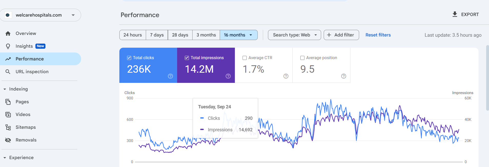

A healthcare SEO campaign focused on keyword research, on-page SEO, content scaling, local search visibility, Google Business Profile optimization, and Search Console monitoring.
Organic Clicks
Search Impressions
Average Position
Target Market
Welcare Hospital already had an established website, but its organic visibility was weak compared to the size of its medical services and growth goals.
The website needed stronger visibility across healthcare searches, service-related keywords, and local patient search opportunities in Egypt.
The goal was to expand organic reach across the hospital’s priority services and make the website more visible for the searches potential patients were already using.
The strategy focused on content-led healthcare visibility supported by on-page optimization, local SEO, Google Business Profile improvements, and ongoing performance monitoring.
Content was one of the main growth drivers of the project. The campaign included publishing around three new articles per week and optimizing around four existing articles per week on average.
This helped expand the hospital’s topical coverage across medical services while strengthening visibility for patient-focused healthcare searches.
Local SEO was a key part of the campaign. I worked on Google Business Profile optimization and local keyword research to help Welcare Hospital appear for relevant local healthcare searches.
The goal was to connect the hospital’s services with users searching for healthcare providers in its target areas.
The campaign helped Welcare Hospital expand organic search visibility across its healthcare services and local patient search opportunities.
This screenshot shows Welcare Hospital’s organic search performance, including clicks, impressions, average position, and search visibility during the SEO campaign.

The biggest achievement was helping Welcare Hospital appear for the priority healthcare keywords and services the business wanted to grow.
The campaign supported strong expansion across medical service visibility and helped the hospital build a broader organic presence through consistent content and search-focused optimization.
Welcare Hospital demonstrates how healthcare SEO can scale when keyword research, content production, on-page optimization, local SEO, and Search Console monitoring work together.
The project focused on expanding visibility across the hospital’s services and making the website more discoverable to potential patients searching online.
If you want to grow organic visibility, rank for high-intent keywords, and turn your website into a lead generation channel, let’s talk.